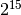

Image Data¶
In this chapter, we’ll discuss the data component in an image HDU.
Image Data as an Array¶
A FITS primary HDU or an image extension HDU may contain image data. The following discussions apply to both of these HDU classes. In Astropy, for most cases, it is just a simple numpy array, having the shape specified by the NAXIS keywords and the data type specified by the BITPIX keyword - unless the data is scaled, see next section. Here is a quick cross reference between allowed BITPIX values in FITS images and the numpy data types:
BITPIX Numpy Data Type 8 numpy.uint8 (note it is UNsigned integer) 16 numpy.int16 32 numpy.int32 -32 numpy.float32 -64 numpy.float64
To recap the fact that in numpy the arrays are 0-indexed and the axes are ordered from slow to fast. So, if a FITS image has NAXIS1=300 and NAXIS2=400, the numpy array of its data will have the shape of (400, 300).
Here is a summary of reading and updating image data values:
>>> f = fits.open('image.fits') # open a FITS file
>>> scidata = f[1].data # assume the first extension is an image
>>> print(scidata[1, 4]) # get the pixel value at x=5, y=2
>>> scidata[30:40, 10:20] # get values of the subsection
... # from x=11 to 20, y=31 to 40 (inclusive)
>>> scidata[1,4] = 999 # update a pixel value
>>> scidata[30:40, 10:20] = 0 # update values of a subsection
>>> scidata[3] = scidata[2] # copy the 3rd row to the 4th row
Here are some more complicated examples by using the concept of the “mask array”. The first example is to change all negative pixel values in scidata to zero. The second one is to take logarithm of the pixel values which are positive:
>>> scidata[scidata < 0] = 0
>>> scidata[scidata > 0] = numpy.log(scidata[scidata > 0])
These examples show the concise nature of numpy array operations.
Scaled Data¶
Sometimes an image is scaled, i.e. the data stored in the file is not the image’s physical (true) values, but linearly transformed according to the equation:
physical value = BSCALE * (storage value) + BZERO
BSCALE and BZERO are stored as keywords of the same names in the header of the same HDU. The most common use of scaled image is to store unsigned 16-bit integer data because FITS standard does not allow it. In this case, the stored data is signed 16-bit integer (BITPIX=16) with BZERO=32768 (), BSCALE=1.
Reading Scaled Image Data¶
Images are scaled only when either of the BSCALE/BZERO keywords are present in the header and either of their values is not the default value (BSCALE=1, BZERO=0).
For unscaled data, the data attribute of an HDU in Astropy is a numpy array of
the same data type specified by the BITPIX keyword. For scaled image, the
.data attribute will be the physical data, i.e. already transformed from
the storage data and may not be the same data type as prescribed in BITPIX.
This means an extra step of copying is needed and thus the corresponding memory
requirement. This also means that the advantage of memory mapping is reduced
for scaled data.
For floating point storage data, the scaled data will have the same data type.
For integer data type, the scaled data will always be single precision floating
point (numpy.float32). Here is an example of what happens to such a file,
before and after the data is touched:
>>> f = fits.open('scaled_uint16.fits')
>>> hdu = f[1]
>>> hdu.header['bitpix']
16
>>> hdu.header['bzero']
32768
>>> print(hdu.data) # once data is touched, it is scaled
[ 11. 12. 13. 14. 15.]
>>> hdu.data.dtype.name
'float32'
>>> hdu.header['bitpix'] # BITPIX is also updated
-32
>>> # BZERO and BSCALE are removed after the scaling
>>> hdu.header['bzero']
KeyError: "Keyword 'bzero' not found."
Warning
An important caveat to be aware of when dealing with scaled data in PyFITS,
is that when accessing the data via the .data attribute, the data is
automatically scaled with the BZERO and BSCALE parameters. If the file was
opened in “update” mode, it will be saved with the rescaled data. This
surprising behavior is a compromise to err on the side of not losing data:
If some floating point calculations were made on the data, rescaling it
when saving could result in a loss of information.
To prevent this automatic scaling, open the file with the
do_not_scale_image_data=True argument to fits.open(). This is
especially useful for updating some header values, while ensuring that the
data is not modified.
One may also manually reapply scale parameters by using hdu.scale()
(see below). Alternately, one may open files with the scale_back=True
argument. This assures that the original scaling is preserved when saving
even when the physical values are updated. In other words, it reapplies
the scaling to the new physical values upon saving.
Writing Scaled Image Data¶
With the extra processing and memory requirement, we discourage use of scaled
data as much as possible. However, Astropy does provide ways to write scaled
data with the scale method. Here are a few examples:
>>> # scale the data to Int16 with user specified bscale/bzero
>>> hdu.scale('int16', bzero=32768)
>>> # scale the data to Int32 with the min/max of the data range
>>> hdu.scale('int32', 'minmax')
>>> # scale the data, using the original BSCALE/BZERO
>>> hdu.scale('int32', 'old')
The first example above shows how to store an unsigned short integer array.
Great caution must be exercised when using the scale() method.
The data attribute of an image HDU, after the
scale() call, will become the storage values, not the physical
values. So, only call scale() just before writing out to FITS
files, i.e. calls of writeto(), flush(), or
close(). No further use of the data should be exercised. Here is
an example of what happens to the data attribute after the
scale() call:
>>> hdu = fits.PrimaryHDU(numpy.array([0., 1, 2, 3]))
>>> print(hdu.data)
[ 0. 1. 2. 3.]
>>> hdu.scale('int16', bzero=32768)
>>> print(hdu.data) # now the data has storage values
[-32768 -32767 -32766 -32765]
>>> hdu.writeto('new.fits')
Data Sections¶
When a FITS image HDU’s data is accessed, either the whole
data is copied into memory (in cases of NOT using memory mapping or if the data
is scaled) or a virtual memory space equivalent to the data size is allocated
(in the case of memory mapping of non-scaled data). If there are several very
large image HDUs being accessed at the same time, the system may run out of
memory.
If a user does not need the entire image(s) at the same time, e.g. processing
images(s) ten rows at a time, the section attribute of an
HDU can be used to alleviate such memory problems.
With PyFITS’ improved support for memory-mapping, the sections feature is not as necessary as it used to be for handling very large images. However, if the image’s data is scaled with non-trivial BSCALE/BZERO values, accessing the data in sections may still be necessary under the current implementation. Memmap is also insufficient for loading images larger than 2 to 4 GB on a 32-bit system–in such cases it may be necessary to use sections.
Here is an example of getting the median image from 3 input images of the size 5000x5000:
>>> f1 = fits.open('file1.fits')
>>> f2 = fits.open('file2.fits')
>>> f3 = fits.open('file3.fits')
>>> output = numpy.zeros(5000 * 5000)
>>> for i in range(50):
... j = i * 100
... k = j + 100
... x1 = f1[1].section[j:k,:]
... x2 = f2[1].section[j:k,:]
... x3 = f3[1].section[j:k,:]
... # use scipy.stsci.image's median function
... output[j:k] = image.median([x1, x2, x3])
Data in each section does not need to be contiguous for
memory savings to be possible. PyFITS will do its best to join together
discontiguous sections of the array while reading as little as possible into
main memory.
Sections cannot currently be assigned to. Any modifications made to a data section are not saved back to the original file.